İstanbul Efsaneleri: Bir Türk RPG'sini Sıfırdan Okumak
🇹🇷 Turkish Content: This article is written in Turkish. The cultural and emotional nuances cannot be properly translated, so it remains in its original language.
Bu araştırma Claude Code (Opus 4.6, 1M context) tarafından yapıldı. Bulguları ve anlatısı insan editöründen (benden) geçti, ama binary'leri ilk açan, pattern'ları kuran, kodları yazan asistanın ta kendisi.
1993'ün son gecesi. Şişli'nin soğuk sokakları. İki Özgür yan yana yürüyor.
O geceden bu yana 30 yıl geçti. Ortaya çıkan şey — İstanbul Efsaneleri: Lale Savaşçıları — Türkiye'nin en özgün bilgisayar oyunlarından biri olarak hâlâ akıllarda. Otopark bodrum katında başlayan bir hikaye, çöp tenekesi kapakları ve levreklerle savaşan magandalar, Cehalet Tapınağı'na uzanan bir yolculuk.
Ben de bu oyunun dosyalarına baktım. Belgelenmemiş binary formatlar. Hiç dokümanasyon yok. Sadece .CKD uzantılı arşivler, .CMP grafikler, .PCS scriptler, .PUR ses dosyaları — hepsi kendi içine kapalı.
Bu yazı o dosyaların peşinde yürümek için. Reverse engineering: bir şeyi sıfırdan okumak. Hiçbir kaynak kod yok, hiçbir format belgesi yok. Sadece ham byte'lar ve sabır.
Reverse Engineering Nasıl Çalışır?
Belgesiz bir binary formatı çözmek şuna benzer: alfabesi bile farklı bir dilde yazılmış bir mektup okumaya çalışmak.
- Genel yapıyı anla. Dosya boyutu, uzantılar, kaç tane var?
- Magic byte'ları bul. Her format ilk birkaç byte'ta kendini tanıtır.
- Pattern'ları keşfet. Tekrar eden diziler, sabit offset'ler, yapısal boşluklar.
- Hipotez kur. "Bu 4 byte little-endian integer olabilir mi?" Hesapla, kontrol et.
- Test et. Hipotezi uygula, sonuç mantıklı mı?
- Doğrula. Birden fazla dosyada çalışıyor mu?
Ve yanılmak normal. Bir hipotezin tutmaması yeni bilgi demek.
Tarihsel Bağlam
Oyunun yazarı Özgür Özol (StillPsycho) kendi sözleriyle:
"Oyunu yazmamız 1 yıl kadar sürdü. Amiga için bir programlama dili olan AMOS kullanmıştık. Elimizde gerçekten az imkan vardı. Grafiklerde bir koordinat hatası olunca Amiga'yı resetleyip, disketten grafik programı çalıştırıp, hatayı düzeltip, tekrar program editörünü boot etmek ne demektir acaba bu yeni kuşak anlayabilir mi?"
PC sürümü ayrı bir hikaye. Compuphiliacs ve SiliconWorx grupları birleşti. RAKS New Media dağıtımı üstlendi, $35'a sattı.
"Acilen CD-ROM'dan film oynatmak için bir video codec geliştirir. Ekibin elinde bir CD-ROM olmaması elbet işleri biraz sürreal bir sürece sokar."
Film çekimlerinde V8 kamera, bir Vosvos'un uzun farları ve kaplama kağıdından filtreler kullanıldı. Ekibin oyundan elde ettiği gelirle RAKS kampı boyunca yenen kebapların borcu ödendi.
Poster hikayesi de ayrı (Emre Erdur anlatıyor): Akrilik boyalarla poster çizildi, kraft kartonundan özel zarf yapıldı, talimat yazıldı. Sonra biri gelip posteri zarfından çıkarmış, kıvırıp koltuğunun altına sokup götürmüş. Orijinal kayıp.
Ve "Acaba biz de yapabilir miyiz?" sorusunun cevabını verdiler.
1. İlk Adım: Dosya Yapısını Anlamak
Oyun dizini:
IST.EXE 385 KB — ana executable
0GFL.CKD 218 MB — dev arşiv (video?)
SOUNDS.CKD 11 MB — sesler
SAVAS.CKD 254 KB — savaş grafikleri
MUZIK.CKD 1.2 MB — müzik
3D.CKD 1.4 MB — 3D texture'lar
IVIR.CKD 1.4 MB — intro/cutscene
FRPOS.CKD 148 KB — harita ve script
SONPAL.PAL 768 B — palette
.CKD uzantısı standart değil. file komutu data diyor — tanıyamadı. xxd ile ilk byte'lara bakıyorum:
00000000 46 4c 69 42 7a 00 00 00 ab c3 03 00 46 69 4c 45 |FLiBz.......FiLE| 00000010 41 46 41 4b 41 4e 2e 43 4d 50 00 00 00 00 00 00 |AFAKAN.CMP......| 00000020 00 00 00 00 00 00 00 00 00 00 00 00 00 00 00 00 |................|
İlk 4 byte: 46 4C 69 42 = **FLiB**. Bu bir magic number — dosya formatını tanıtan imza.
Sonraki 4 byte (yeşil): 7a 00 00 00 = little-endian uint32 = 122. Dosya sayısı.
Sonraki 4 (mavi): veri boyutu. Sonra turuncu: 46 69 4c 45 = **FiLE** — bir entry'nin başlangıcı.
Ve sarı: AFAKAN.CMP — bir dosya adı. Okunabiliyor!
FLiB Arşiv Formatı
İki ardışık FiLE marker arasındaki mesafeyi hesapladım. 65 byte entry header + dosya verisi. Entry yapısı:
[0:4] "FiLE" marker
[4:32] dosya adı (28 byte, null-padded)
[32:36] 4 byte gap
[36:50] dosya adı kopyası (14 byte)
[53] flag byte
[57:60] dosya boyutu (3 byte little-endian)
[61:64] dosya boyutu tekrarı
[64] 0x00 separator
Bunu nasıl buldum? İlk FiLE offset 12'de, ikinci FiLE offset 0x3c2'de. Aradaki fark 950 byte. Entry header'ı çıkarınca kalan = dosya verisi. Birkaç entry'yi karşılaştırarak field sınırları netleşti.
Parser yazdım: flib_parser.py. Tüm CKD dosyaları açılabiliyor. SAVAS.CKD'den 122, SOUNDS.CKD'den 206, IKON.CKD'den 188 dosya çıktı.
2. Grafikleri Görmek: CMP Formatı
SAVAS.CKD'den çıkan ilk .CMP dosyası: ANAKES.CMP, 36687 byte.
00000000 40 01 c8 00 94 11 85 00 9f 11 85 00 ff 11 ff 11 99 11 85 00 |@.È.............| Width: 0x0140 = 320 Height: 0x00C8 = 200 Data: RLE sıkıştırılmış piksel verisi
320×200 = VGA tam ekran. Ama dosya 36687 byte, 64000 piksel gerek. Sıkıştırma var.
Byte dağılımına bakıyorum: yaklaşık %50 byte >= 0x80. Klasik RLE işareti.
Hipotez: Byte >= 0x80 → run: count = byte & 0x7F, sonraki byte bu kadar tekrarla. Byte < 0x80 → literal: sonraki count byte kopyala.
Test: tam 64000 piksel çıktı. İlk deneme doğru.
Palette: .PAL dosyası = 768 byte = 256 renk × 3 (RGB). VGA 6-bit (0-63), ×4 ile 8-bit'e scale.
İlk doğru render:
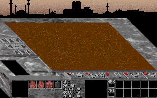
Yanlış Palette Macerası
SBD dosyaları (storyboard sahneleri) hep kırmızı çıkıyordu. 25 farklı palette denedim. Sonunda DEMO1.PAL tuttu. Farklı sahneler farklı palette kullanıyor — doğrusunu bulmak için bazen kaba kuvvet gerekiyor.
Çıkan Grafikler
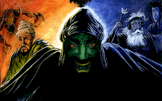
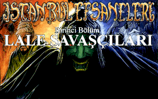
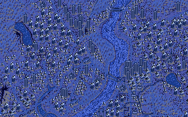
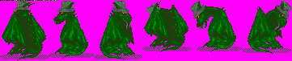
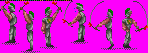
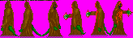
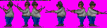
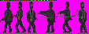
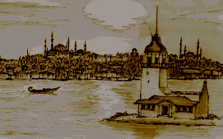
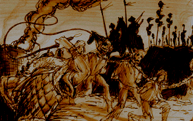
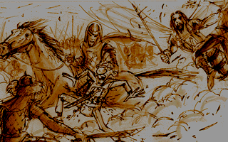
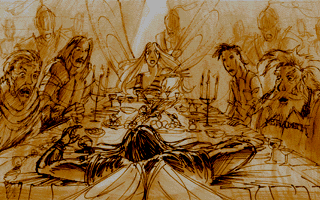
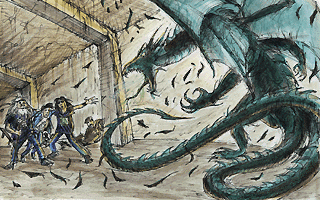
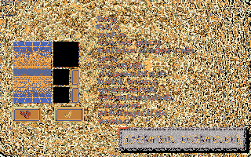
Sprite'larda magenta (#FF00FF) transparency mask — 90'ların standart tekniği. .KOR dosyaları (72 byte) frame koordinatları içeriyor.
3. Sesleri Duymak: PUR ve AMF
SOUNDS.CKD'den 206 dosya çıktı. .PUR uzantılı.
00000000 7f 80 81 80 80 7f 80 7f 80 81 80 80 7f 80 80 81 |................| 00000010 80 7f 81 82 83 82 81 80 7f 7e 7d 7c 7e 7f 80 81 |.........~}|~...|
Header yok. Değerler 0x7E-0x82 arasında — unsigned 8-bit PCM audio'nun sessizlik değeri 0x80.
Ama sample rate ne? Autocorrelation pitch analizi yaptım: erkek ses 149Hz (22050Hz'de), kadın ses 199Hz. 11025Hz olsaydı bu değerler 74Hz ve 99Hz olurdu — insan sesi için çok düşük.
Format: raw PCM, 8-bit unsigned, mono, 22050 Hz.
Erkek vecize (atasözü):
Kadın vecize:
Hikaye anlatımı (21 saniye):
Vuruş:
Ölüm:
Kapı:
AMF Müzik
MUZIK.CKD'den .AMF dosyaları çıktı: DSMI Advanced Module Format v14.
00000000 41 4d 46 0e 33 79 65 6e 69 00 00 00 00 00 00 00 |AMF.3yeni.......| Magic: AMF Version: 14 Title: "3yeni"
Besteci: "ibina özgür". Easter egg'ler: "istanbul efsaneleri", "compuphiliacs", Metallica referansları.
AMF dosyaları (OpenMPT ile çalınabilir): ISTANBUL.AMF — ana tema | SAVAS.AMF — savaş | 3D.AMF — zindan
4. Hikayeyi Okumak: FRPOS Script Motoru
IST.EXE'nin içinde debug string'leri arayınca:
FRPOS komutu: random(ilk deneme)..
FRPOS komutu: wait(ilk deneme)..
eger olay %d->%s
Komut no:%d
Atla:%d=>
FRPOS — oyunun kendi script motorunun adı. StillPsycho bizzat anlatmış:
"FRPOS diye bir çeşit yan programlama dili yazmıştık. Öyküyü bilgisayar da anlasın diye."
1994'te, ticari bir engine yokken, sıfırdan scripting dili.
PCS Encoding'i Çözmek
PCS dosyaları AmBk header (20 byte) ile başlıyor. Sonrası encoded:
00000014 00 06 01 36 00 16 00 b8 01 32 01 34 0d 00 01 01 00000024 01 01 04 02 47 5a 3f 49 57 68 3f 5a 57 64 16 5d
0x16 çok sık görünüyor. 0x16 + 10 = 0x20 = space. Her byte'a +10 ekle:
00000014 0a 10 0b 40 0a 20 0a c2 0b 3c 0b 3e 17 0a 0b 0b 00000024 0b 0b 0e 0c 51 64 49 53 61 72 49 64 61 6e 20 67 Q d I S a r I d a n g
QdISarIdan = "dışarıdan". Türkçe metin ortaya çıkıyor!
Tüm 18 script dosyasını decode ettim. Oyunun hikayesi, diyalogları, dallanmaları burada:
"dISarIdan garip hIrIltIlar geliyor...
gerCekten dISarI CIkacak MIYIZ?"
→ evet / hayIr
"burada baygIN bir adam yatIyor. UstUnU arayalIm mI?"
"beyler, burada bir anahtar buldum!"
Ve bir noktada, doğrudan developer yorumu:
(ulan Özgür, sen mi yaptın lan bu dedeyi her şeyi bok etti herif..silin lan şunu disketten)!!!!!!!!!
Dördüncü duvar kırılıyor. Script dosyasının içinde, 1994'te yazılmış, 2025'te açılıyor.
5. Haritaları Çözmek: Tile-Based Dungeon
PC dosyaları harita verisi. AmBk header sonrası ilk 2 byte = W, H:
PC1: 10×10, PC2: 30×30, PC15: 20×20, PC18: 5×5.
Tile boyutu keşfi: (dosya_boyutu - 23) / (W × H) her haritada tam 15 çıkıyor. 23 = 2 (W,H) + 21 (footer).
Format: W(1) + H(1) + tiles(W×H × 15 byte) + footer(21 byte)
18 harita decode edildi:
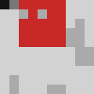
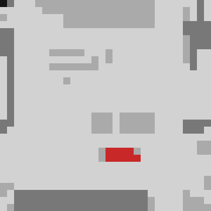
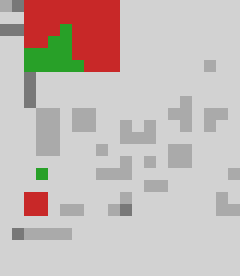
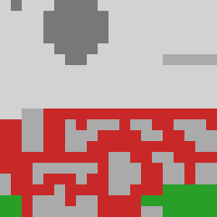
Siyah = koridor, gri = duvar, kırmızı = özel alan/event tetikleyici.
| Bölge | Boyut | Tile |
|---|---|---|
| Otopark | 10×10 | 100 |
| Mecidiyeköy | 30×30 | 900 |
| Beşiktaş | 20×18 | 360 |
| Eminönü | 20×23 | 460 |
| Topkapı Sarayı | 20×20 | 400 |
| Kız Kulesi | 10×10 | 100 |
| Cehalet Tapınağı | 5×5 | 25 |
3D zindan texture'ları:
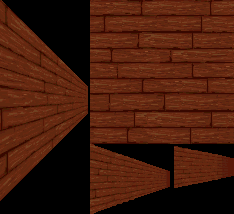
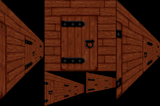
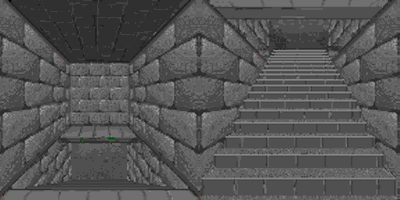
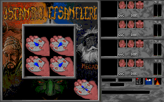
6. Karakter Sistemi
GRPHAZIR.DAT (664 byte) = varsayılan parti. 4 karakter × (74 byte isim bloğu + 92 byte stat bloğu).
00000000 67 81 72 63 61 6e 69 00 00 00 00 00 00 00 00 00 |gürcani.........| 00000025 31 30 30 30 30 30 30 30 30 30 30 30 30 30 30 30 |1000000000000000| İsim: "gürcani" Flags: "100000000000000000000000000000000000" (36 boolean)
92-byte stat bloğunda 46 uint16 değer. Çözülenler:
| İndeks | gürcani | alper | gökhan | nizamettin | Tahmin |
|---|---|---|---|---|---|
| 1 | 8 | 5 | 2 | 4 | Sınıf ID |
| 2 | 1 | 1 | 1 | 1 | Cinsiyet |
| 3 | 50 | 50 | 50 | 50 | Boy |
| 4 | 50 | 50 | 50 | 50 | Kilo |
| 5 | 81 | 110 | 101 | 196 | Güç |
| 6 | 6 | 6 | 5 | 3 | Seviye |
| 18 | 175 | 179 | 168 | 154 | Max HP? |
Varsayılan parti: gürcani (siliconian), alper (lavuk), gökhan (öğrenci), nizamettin abi (maganda).
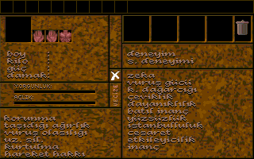
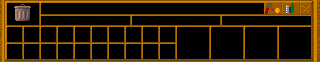
7. Çözülemeyen: GFL Video Formatı
0GFL.CKD: 218 MB, 70 dosya. 35 .GFL video + 35 .GHD header çifti.
GHD başlığı:
00000000 47 46 4c 4f 00 0a 22 56 a0 86 01 00 00 00 00 00 |GFLO.."V........| Magic: GFLO Byte 6-7: 0x5622 = 22050 — ses sample rate! Byte 8-11: 100000
GHD'de palette var ve doğru renkleri gösteriyor. GFL'de raw pixel data var (entropy 6.52, mean byte diff 0.7 — çok smooth). Ama render edince gürültü.
Denenen yöntemler: raw 320×200, Mode-X 4-plane, Amiga bitplane, delta encoding, LZSS, palette rotation, column-major, interlaced. Hiçbiri tutmadı.
Bu soruyu çözmek için Ghidra ile IST.EXE disassembly gerekiyor.
8. Debug Mesajları ve Modül Yapısı
IST.EXE: 385KB, Borland C++ ile derlenmiş. Versiyon: 0.12.96.
Kaynak modüller (debug bilgisinden):
| Modül | İşlev |
|---|---|
ISTANBUL.C |
Ana oyun döngüsü |
3DSYS.L / 3DQUICK.L |
First-person 3D zindan |
ISOSYS.L |
İzometrik savaş |
FRPOS.L |
Script motoru |
CHARGEN.L |
Karakter oluşturma |
GFL.C |
FLiB arşiv sistemi |
Dışarıdan tek kütüphane: AMP 2.00 (Otto Chrons) — müzik için. Geri kalan her şey onlara ait.
Debug mesajları:
"Buggy code, buggy code, BC BC satir:%d"
"Tamam abi breyk, breyk, sitop !!!"
"Bitler resetlendi, pireler set edilmeliydi..."
"allah nazardan saklasın"
38 düşman türü. Yobaz sos isimleri: beşamel, bolonez, napoliten, ograten. Savaş diyalogları: "höynk!!!", "ben gariban bir antenim!", "anneeee!!!"
Hız sistemi: "ışık hızıyla" → "ses hızıyla" → "bayağı hızlı" → "araba hızlı" → "yürüme hızlı" → "otobüs hızlı" → "cengo yerkenki".
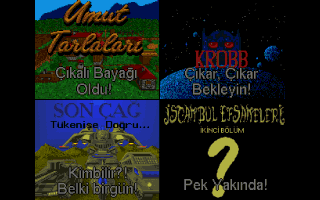
İstanbul Efsaneleri II duyurulmuş ama çıkmamış.
Sonuç
Çözülen: FLiB arşiv formatı, CMP grafik codec'i, PUR ses formatı, AMF müzik, FRPOS script encoding, harita tile formatı, karakter stat yapısı.
Çözülemeyen: GFL video piksel sıralaması, FRPOS opcode tablosunun tamamı, savaş formülleri.
1994-96'da bir grup Türk geliştirici — çoğu liseli — kendi arşiv formatını, kendi grafik codec'ini, kendi scripting dilini yazdı. Tek dışarıdan aldıkları şey müzik kütüphanesi.
30 yıl sonra binary'ye bakınca her şey hâlâ orada: debug mesajları, storyboard çizimleri, ekip fotoğrafı, yarım kalan diyaloglar.
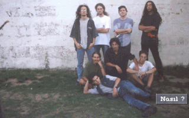
"Nasıl?" yazıyor fotoğrafın altında. Nasıl mı? İyi.
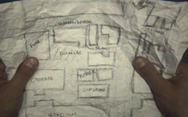
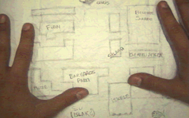
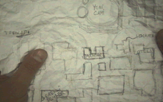
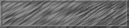